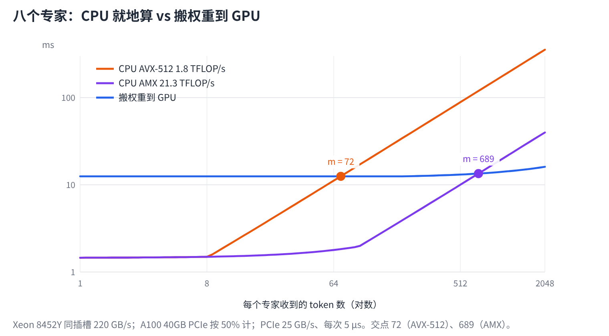
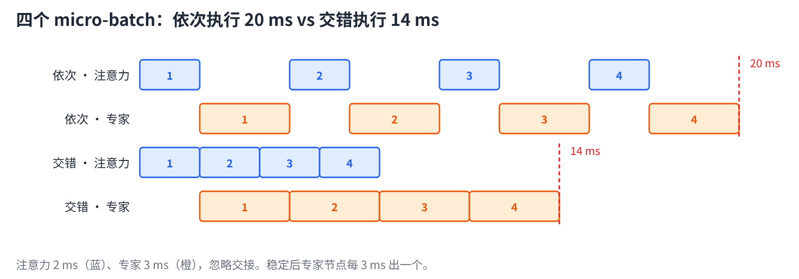
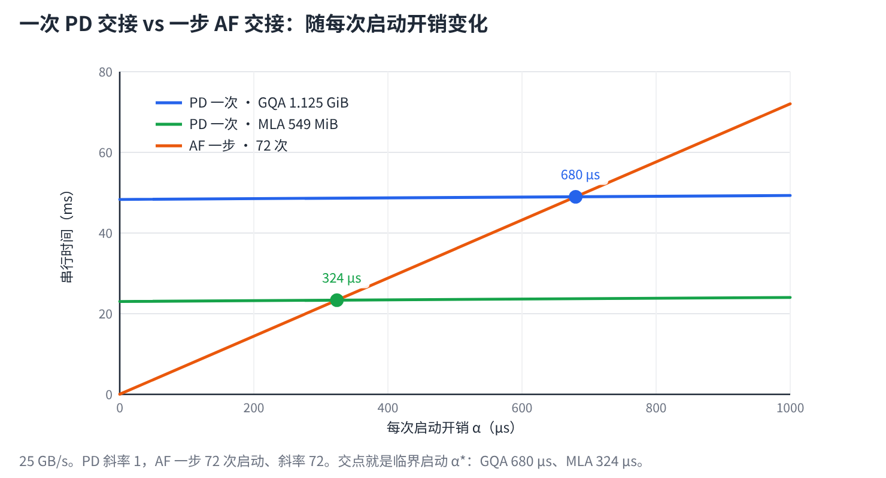
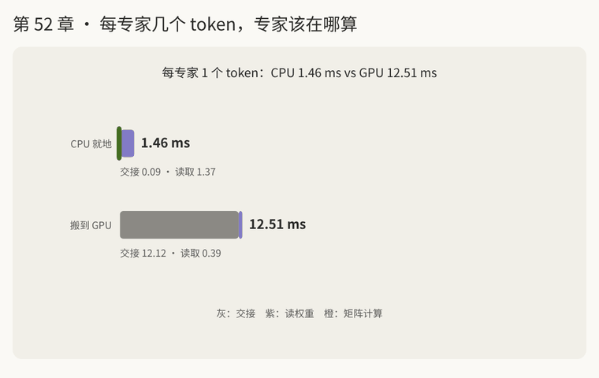

第 52 章 · Attention–FFN 分离与异构执行：专家放 CPU 还是搬到 GPU
本地运行
git clone https://github.com/wikieden/ai-infra-from-constraints
cd ai-infra-from-constraints/code/notebooks
pip install jupyterlab torch numpy
jupyter lab ch52_af_split.ipynb也可以下载后直接用 VS Code 打开 .ipynb 运行。需要 GPU 的章节在 Colab 里选「代码执行程序 → 更改运行时类型 → GPU」。
本章回答：MoE 的专家权重大多放在主存时，是把 36 MiB 权重搬给 GPU 算，还是让 CPU 就地算、只传激活？每个专家收到几个 token 时两条路换手？CPU 用 AVX-512 还是 AMX 为什么能把交点从 72 推到 689？一批 64 个 token 会碰到多少个专家？注意力和专家分到两台机器后，micro-batch 怎么交错？AF 一步交接 0.384 ms 看着比 PD 的 48.3 ms 小，为什么整条请求反而贵 8 倍？
讲解日期：2026-11-24 · 上一章：第 51 章 Prefill–Decode 分离与资源配比 · 下一章：第 53 章 专家放置、复制与负载均衡
对应原文：materials/ai-infra-book/manuscripts/09-分布式推理.md§9.3 L230–L347（例 9.3、9.4，图 9-12 至 9-18）
本章缩写：AVX-512 = Advanced Vector Extensions 512（高级 / 向量 / 扩展，512 位）· AMX = Advanced Matrix Extensions（高级 / 矩阵 / 扩展）· NUMA = Non-Uniform Memory Access（非 / 均匀 / 内存访问）· PCIe = Peripheral Component Interconnect Express（外设 / 组件 / 互连 / 高速）· EP = Expert Parallelism（专家 / 并行）· TPOT = Time Per Output Token（每个 / 输出 / token 的时间）。全部缩写见 缩写与术语表
讲解
第一步：两条路径，交点看复用（2026-11-24）
类比：修家具。 家具很大（专家权重 36 MiB）、零件很小（一个 token 的激活 8 KiB）。只修一个零件，派师傅上门（CPU 就地算，只送零件）比把家具运到厂里（搬权重到 GPU）划算；要修上百个零件，运到厂里用大机床反而快。
原文 L232–L256：Qwen3-235B-A22B 一个专家三个矩阵，\(3 \times 4096 \times 1536 = 18{,}874{,}368\) 参数，BF16 36 MiB。
例 9.3 用 KTransformers 论文的实验机：单颗 Xeon Platinum 8452Y（同插槽内存 220 GB/s；PyTorch AVX-512 kernel 1.8 TFLOP/s、KTransformers AMX kernel 21.3 TFLOP/s）+ A100 40GB PCIe（按 50% 计 156 TFLOP/s、778 GB/s），PCIe 交接 25 GB/s、每次 5 μs。
| 八个专家，每专家 \(m\) 个 token | CPU AVX-512 | CPU AMX | 搬到 GPU |
|---|---|---|---|
| \(m = 1\) | 1.46 ms | 1.46 ms | 12.5 ms |
| \(m = 128\) | 22.2 ms | 2.57 ms | 12.5 ms |
| 交点 | 72 | 689 | — |

图 52-1 · 横轴对数。搬权重那条几乎是平的（12.5 ms 全花在 PCIe 上），CPU 两条随 m 线性上升，过了交点 GPU 占优。
- 低复用时，避开大块权重搬移比矩阵算力更值钱。
- 同一台机器、同一批请求，CPU 用哪套指令就决定专家放哪一侧。
- NUMA：跨插槽读只有 125 GB/s。128 token 时 AVX-512 计算 21.5 ms 远长于读取 1.37 ms，内存放哪个插槽无所谓；AMX 计算 1.81 ms 只比同插槽读取略长，跨插槽读取（2.42 ms）反而成了较长的一项。先看瓶颈是读还是算。
一句话：搬权重是一笔固定开销，就地算是每个 token 一份；每专家输入行数决定在哪边算。
第二步：装得下 ≠ 来得及；一批会碰多少专家（2026-11-24）
类比：仓库和货架。 仓库（主存）放得下所有货，手边货架（显存）只放常用的；一批订单会用到多少种货，决定要跑几趟仓库。
原文 L282–L298：
- 每层 128 个专家共 4.5 GiB；每层驻留 32 个 × 94 层 ≈ 106 GiB，一张 A100 80GB 放不下；减到 16 个是 53 GiB，但更多专家交给主存一侧。容量选择直接改执行路径。
- 64 个 token 各选 8 个、共 512 次分派：均匀覆盖每专家 4 行，集中到 8 个专家每专家 64 行；计算量一样（19.3 GFLOPs），权重读取 4.5 GiB vs 288 MiB，在 220 GB/s 上 22.0 vs 1.37 ms。
- 随机路由期望活跃专家数（第 33 章）：
batch 再大，不同专家数封顶 128，新 token 越来越多地复用已读入的权重。所以大主存 + 少量 GPU 适合每专家行数少的负载；并发一高，瓶颈从读权重转到 CPU 矩阵计算，正对应图 52-1 的交点。
一句话：总专家数定要放多少，分派次数定算多少，批内专家集合定读多少。
第三步：跨机 AF 与 micro-batch 交错（2026-11-24）
类比：两个人包饺子。 一个擀皮（注意力），一个包馅（专家）。一盆一盆轮流做，总有一个人干等；擀第二盆皮时让对方包第一盆，两人就同时在忙。
原文 L300–L326：把路由专家放进独立的专家池，叫专家分离（EP 分离）。一层 MoE 依次是：A 卡算注意力和路由 → dispatch（All-to-All 把隐状态发到专家所在的 B 卡）→ B 卡按专家重排、做矩阵乘 → combine（结果原路返回，A 卡按路由权重求和）。两处等待：B 等各来源到齐，A 等一个 token 的全部专家结果。
- 大 EP 不自动增大每个专家的 batch：均匀路由每专家平均 \(nk/E\) 行（1024 × 8 / 256 = 32），把 256 个专家从 32 卡摊到 128 卡，平均仍是 32，只是每卡专家变少。
- 交错流水：\(q\) 个 micro-batch，两阶段各 \(t_A\)、\(t_F\)：

图 52-2 · 注意力 2 ms、专家 3 ms。稳定后专家节点一直在算，每 3 ms 出一个。
拆小以后每段变慢、或不能重叠的往返超过省下的 6 ms，收益就没了。MegaScale-Infer（2025）在八节点 Ampere 集群、TPOT ≤ 150 ms 下报告每 GPU decode 吞吐是 TensorRT-LLM 的 1.90 倍，但这包含放置、并行、流水和通信库的共同效果，不是"开 EP 分离"的通用加速比。
一句话：AF 跨机后靠 micro-batch 交错填满两边，节拍由较慢的一段定。
第四步：AF 一步便宜，整条请求贵（2026-11-24）
类比：一次搬家 vs 每天通勤。 搬家一次搬一卡车（PD 一次交接整份 KV）；通勤每次只带个包（AF 每层一个隐状态），但天天要走，次数一多，路上的时间就超过搬家。
原文 L328–L344，例 9.4：Qwen3-8B 把 36 层 FFN 放到另一侧，每层发一个 4096 维 BF16 隐状态（8 KiB）并收回同样大小，一步 decode 72 次、576 KiB：
令一次 PD 交接与一步 AF 交接相等，得临界启动时间
| 状态 | 25 GB/s | 50 GB/s |
|---|---|---|
| GQA 1.125 GiB | 680 μs | 340 μs |
| 紧凑 MLA 549 MiB | 324 μs | 162 μs |

图 52-3 · PD 斜率 1，AF 斜率 72；交点就是 α。*
- 5 μs 远低于这些临界值，单看一步，AF 更快。
- 放到整条请求：1024 步 AF 累计约 393 ms，是 GQA 一次 PD（48.3 ms）的 8.1 倍、MLA 一次 PD（23.0 ms）的 17 倍。AF 传的是隐状态，和 KV 头数、潜变量宽度都无关，MLA 帮不上它。
- 8192 token 的 prefill 若也按整批 AF 交接，激活载荷 4.5 GiB，约 193 ms。
一句话：PD 一次大搬移随上下文长，AF 小搬移随步数和层数反复，前者看带宽，后者看启动。
场景代码：在 PyTorch 里比较"搬权重"与"就地算"的两条路，就是 CPU 张量和 .to("cuda", non_blocking=True) 的区别（真实 API）：
import torch
w_cpu = torch.randn(4096, 1536, dtype=torch.bfloat16).pin_memory() # 专家的一个矩阵，放锁页主存
x = torch.randn(1, 4096, dtype=torch.bfloat16, device="cuda") # 一个 token 的激活
y1 = x @ w_cpu.to("cuda", non_blocking=True) # 路径一：搬 12 MiB 权重到 GPU 再算
y2 = (x.cpu() @ w_cpu).to("cuda") # 路径二：激活回 CPU 就地算，只传 8 KiB + 3 KiB
动画演示：每专家 token 数与执行位置

可交互版：animations/52-af-split.html（滑块：log₂ 每专家 token 数 0–11；CPU kernel AVX-512 / AMX；内存同插槽 / 跨插槽）。
怎么看：
- 上面两根横条是八个专家在 CPU、GPU 两条路径上的总时间，短的标绿（第一步）；
- 每根横条拆成交接、读取、计算三段，看哪段最长；
- 播放：1 个 token → 64 → 128（AVX-512 输给 GPU）→ 切 AMX（又赢回来）→ 跨插槽读取。
练习与作答记录
题 1（第一步）：把 PCIe 换成 PCIe 5.0（交接按 50 GB/s）。\(m = 1\) 时八个专家搬到 GPU 的时间变成多少？AVX-512 的交点会往哪边移？
作答记录：（待作答）
题 2（第二步）：\(E = 128\)、\(K = 8\)，batch 只有 8 个 token。期望活跃专家多少？读取的权重大约多少 GiB？
作答记录：（待作答）
题 3（第四步）：一个 48 层的稠密模型、隐状态 5120 维 BF16，AF 每层往返一次，链路 25 GB/s、每次启动 10 μs。一步 decode 的交接多久？输出 2048 个 token 累计多久？
作答记录：（待作答）
口诀
修一个零件派师傅上门，修一百个运回厂里；
仓库放得下，一批订单要跑几趟才是问题；
两人包饺子，擀第二盆时对方包第一盆；
搬家一次大，通勤次数多，算整条路才知道谁贵。
本章复习卡片
I177（T_C(m)、T_G(m)；八专家 1 token 1.46 vs 12.5 ms；交点 AVX-512 72、AMX 689）、I178（每层 32 驻留 106 GiB；E[U] ≈ 126；读取 4.5 GiB vs 288 MiB）、I179（AF 一步 0.384 ms、α* 680 / 324 μs；1024 步 393 ms vs PD 48.3 ms；流水 t_A + t_F + (q−1)max）。练习做完后，按答错、卡住的地方再补。
附录 · 延伸阅读
留给以后深入学习用，不影响本章主线。★ 是建议先读的。
推荐阅读
| 读什么 | 读哪里 | 读它为了什么 |
|---|---|---|
| ★ AII 第 9 章 | §9.3 L230–L347 | 本章原文 |
| KTransformers 论文（原文脚注 kt） | CPU/GPU 混合 MoE 推理、AMX kernel | 例 9.3 的实验机 |
| MegaScale-Infer（2025） | ping-pong 流水 | 跨机 AF 的实证 |
| 第 33 章 上下文、流水线、专家并行 | EP、dispatch / combine | 前置 |
| 第 47 章 压缩与卸载 | 卸载 FFN | 搬权重那条路 |
数学原理
- 固定 + 按量：搬权重是与 \(m\) 无关的固定项，就地算是随 \(m\) 线性的项；两条线相交给出换手点。
- 覆盖期望：每个专家不被 \(M\) 个 token 选中的概率是 \((1 - K/E)^M\)。
- 两阶段流水：首个 micro-batch 走完两段，之后每隔较慢一段出一个。
公式清单
| 公式 | 意思 |
|---|---|
| \(T_C(m)\)、\(T_G(m)\) | CPU 就地 / 搬到 GPU |
| \(\mathbb{E}[U] = E[1 - (1 - K/E)^M]\) | 活跃专家数 |
| \(t_A + t_F + (q-1)\max(t_A, t_F)\) | 交错流水 |
| \(\alpha^* = (V_{KV} - V_{AF})/(71B)\) | PD 与一步 AF 的临界启动 |
代码对照：把本章的数字用代码算一遍
代码
ai-infra/solutions/chapter-code/ch52_af_split.py，测试tests/test_ch52.py：
bash cd ai-infra/solutions/chapter-code uv run python ch52_af_split.py uv run pytest tests/test_ch52.py
| 讲义 | 写法 | 跑出来 |
|---|---|---|
| 第一步 | 8 * t_cpu(m, kernel)、8 * t_gpu(m)、crossover(kernel) |
1.46 / 12.51 ms；72、689 |
| 第二步 | active_experts() |
125.9 个、4.43 GiB |
| 第三步 | pipeline_ms(2, 3, 4) |
14 ms |
| 第四步 | af_step_ms()、alpha_star_us(v) |
0.384 ms；680 / 324 μs |
代码里才看得到的 3 件事：
t_cpu有两次 α（激活去、结果回），t_gpu只有一次（只搬权重），这就是"两条依赖边"。- \(m = 1\) 时 AVX-512 和 AMX 一样快（都是 1.46 ms）：这时读取 36 MiB 比计算长，指令集无关紧要。
crossover是逐个 m 试出来的整数；公式解析解会落在 71 和 72 之间。
自己改一改（不影响练习答案）：
- 把
dram改成 125e9，重算 AMX 的交点。 - 给
t_gpu加"权重已缓存在 GPU 上"的分支（去掉 \(W_e/B_L\)），看还剩什么。 - 用
alpha_star_us算 100 层模型的临界启动。